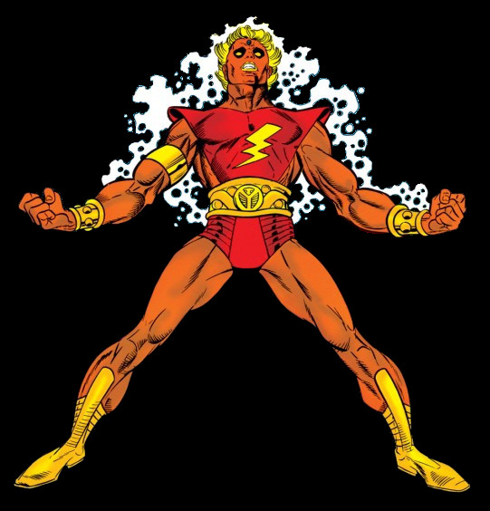
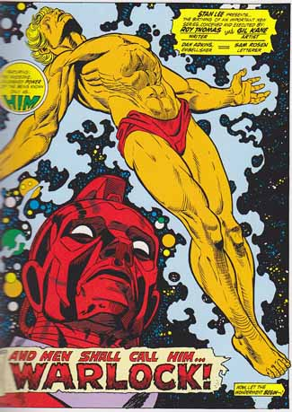

Writer: Roy Thomas
Illustrator: Gil Kane
First Appearence: Fantastic Four #67 as "Him"
Marvel Premiere 1
Publisher: Marvel Comics
Ability:
Titles: Marvel Premeire, Warlock
Biography
Created by Stan Lee and Jack Kirby "Him" was originally an artificial human born from a cocoon (a virgin birth in all but name), but was later rechristened and evolved to higher being status by the High Evolutionary and set up as the Messiah-like protector of Counter-Earth. The very first splash page image of Warlock was Gil Kane’s take on the Crucifixion (Marvel Premiere #1).

Apparently, Roy Thomas, the main architect of the re-imagined Adam Warlock, was a fan of the Andrew Lloyd-Webber musical Jesus Christ Superstar. It was a bold, if not entirely successful, attempt to do something a little bit different in comics.